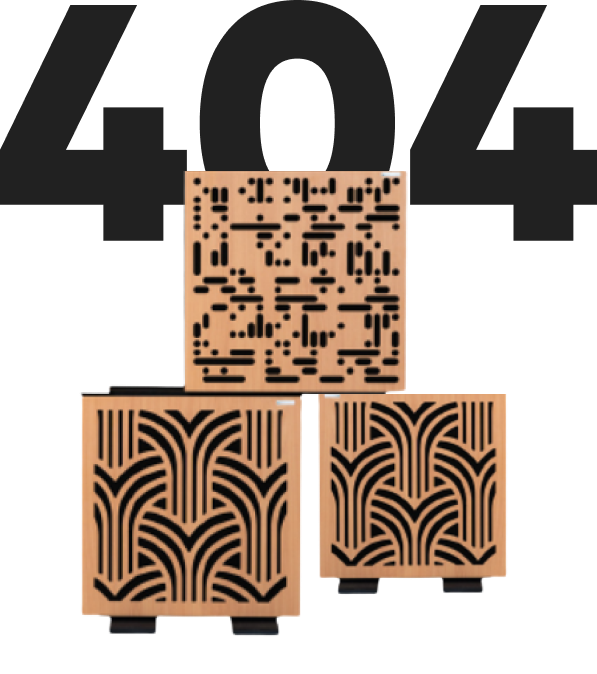

//= partials/head.html

<div class="wrap">
    //= partials/header.html

    <div class="wrap__main">
        <section class="notfound">
            <div class="notfound__back img">
                
            </div>
            <div class="container">
                <div class="notfound__block">
                    <div class="notfound__text">
                        <h1>Page Not Found</h1>
                        <h2>We’re sorry, the page you requested could not be found/ Please go back to the homepage. </h2>
                        <a class="section__button">Go To Home Page</a>
                    </div>
                    <div class="notfound__image">
                        <h3>Ooops...</h3>
                        <div class="notfound__img img">
                            
                        </div>
                    </div>

                </div>

            </div>
        </section>


    </div>

    //= partials/footer.html
</div>

//= partials/scripts.html

</body>
</html>